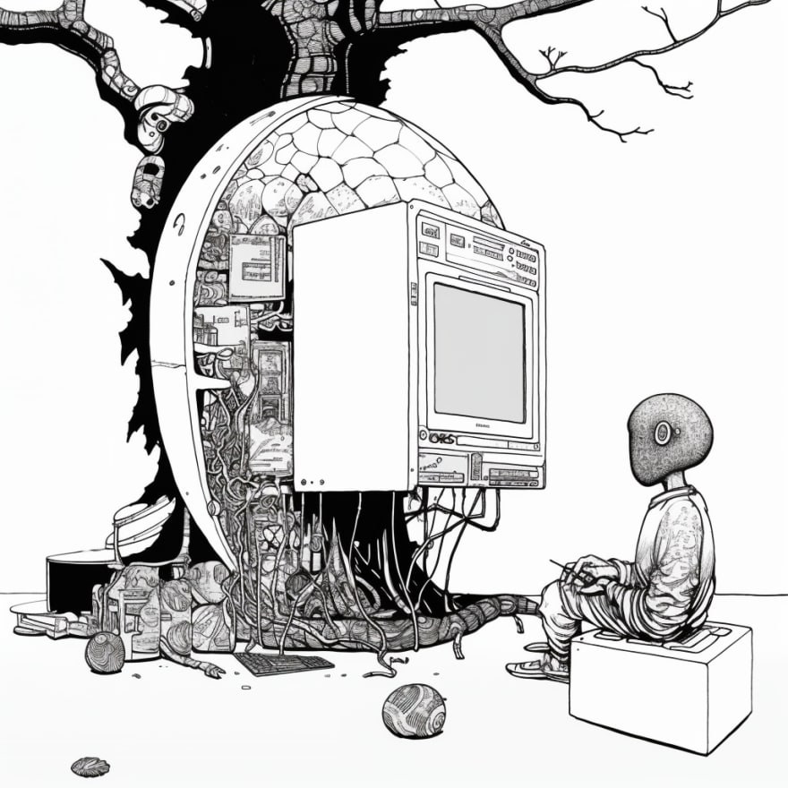
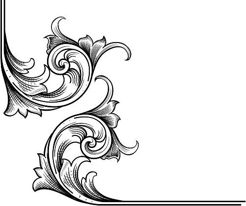
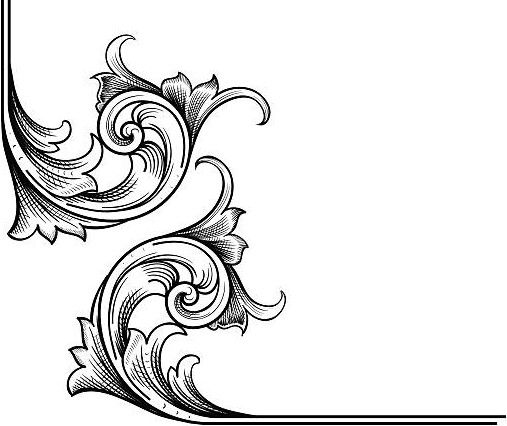

The Development of Modern Art in the 21st Century
By: Caroline Varner | September 30, 2024
The 21st century has witnessed an unprecedented evolution in the world of modern art, reflecting the rapid changes in technology, society, and global interconnectedness. This period has marked the dissolution of traditional boundaries, embracing innovation in media, techniques, and themes. Modern art of the 21st century is characterized by its diversity, inclusivity, and the fusion of multiple artistic disciplines.
Technological Integration and New Media
One of the most notable shifts in modern art has been the integration of technology as both a medium and a subject. Digital art, once considered niche, has now become mainstream. Tools like 3D modeling, virtual reality (VR), and augmented reality (AR) have expanded the boundaries of what is possible in visual expression. Artists now use software and digital tools to create intricate, immersive experiences, offering viewers interactive and multi-sensory engagement. The rise of NFTs (Non-Fungible Tokens) in the art world is another significant milestone, allowing artists to create and sell digital works authenticated through blockchain technology. This development has given digital artists unprecedented recognition and economic opportunities (tsunagu Japan)(DW).
Furthermore, social media platforms such as Instagram and TikTok have transformed how art is consumed and shared. Artists can now reach global audiences instantly, democratizing the art world and bypassing traditional gatekeepers like galleries and critics. As a result, many contemporary artists have built their careers independently through digital spaces.
Globalization and Cultural Hybridity
In the 21st century, globalization has influenced modern art by blurring geographic and cultural boundaries. Artists from diverse backgrounds now engage with global issues like migration, identity, climate change, and colonialism, reflecting the interconnectedness of the world. This has led to a rise in cultural hybridity in art, where traditional practices blend with contemporary techniques and materials.
Exhibitions and biennales across the world—such as the Venice Biennale and Art Basel—showcase the work of artists from previously marginalized regions, offering diverse perspectives. Artists from Africa, Latin America, and Asia have gained prominence in the global art scene, challenging the Eurocentric narratives that once dominated modern art.
This period has also seen a reevaluation of indigenous art and non-Western art traditions. These works are no longer confined to ethnographic museums but are instead recognized for their aesthetic and conceptual value. For example, contemporary indigenous artists often merge traditional symbols with contemporary political commentary, addressing issues such as land rights and historical injustices(DW).
Social and Political Themes
Modern art in the 21st century is deeply engaged with social justice, identity politics, and activism. Issues such as race, gender, LGBTQ+ rights, and the environment are frequent themes. Artists like Ai Weiwei use their work to challenge governmental oppression and advocate for human rights, while others like Kara Walker confront historical and systemic racism through striking visual narratives.
In recent years, movements like Black Lives Matter have galvanized the art world, leading to exhibitions, murals, and performances that speak to issues of racial inequality. Many artists are also exploring the impact of climate change, using their work to raise awareness and critique the political and corporate systems that contribute to environmental degradation(VICE)(Japan Insider Secrets).
Installation and Participatory Art
The 21st century has seen the rise of installation art, where artists create immersive environments that viewers can physically enter or interact with. This type of art is often site-specific and involves a blend of different media, including video, sound, and performance. Artists like Olafur Eliasson and Yayoi Kusama are known for their large-scale installations that blur the line between art and experience.
Participatory art has also gained prominence, where the audience plays a crucial role in the completion of the artwork. This can range from interactive sculptures to performances where viewers become performers themselves. These works challenge the traditional passive role of the art viewer and make the experience more inclusive and communal(My Modern Met).
Sustainability and Eco-Art
As climate change becomes an ever-pressing global concern, many contemporary artists are focusing on sustainability and the environment in their works. Eco-art is a movement that encourages the use of sustainable materials and processes, while also critiquing environmental destruction. Artists like Agnes Denes and Olafur Eliasson create works that not only raise awareness but also offer tangible solutions, such as tree-planting projects or solar-powered installations(
Japan Insider Secrets).
Conclusion
The 21st century has ushered in an era of remarkable innovation in modern art, marked by the convergence of technology, social issues, and global perspectives. Modern art has become more democratized, accessible, and diverse, reflecting the complexities of contemporary life. The future of modern art promises to continue this trend, pushing boundaries and challenging preconceived notions of what art can be.
By embracing new media, addressing urgent social and political concerns, and drawing from global cultures, 21st-century art not only entertains but provokes, questions, and connects us to broader human experiences.
Art and Software Engineering: A Synergy of Creativity and Precision
By: Caroline Varner | October 7, 2024
At first glance, art and software engineering may seem like two entirely different fields—one driven by creativity and emotional expression, and the other governed by logic, precision, and problem-solving. However, as the world continues to evolve through technological advancements and digital transformation, these two disciplines are increasingly intertwined. Both art and software engineering are processes of creation, and when combined, they lead to powerful innovations that shape the way we interact with the world.

The Intersection of Art and Software Engineering
The merging of art and software engineering is most evident in fields such as game development, interactive design, animation, and digital media. These industries rely heavily on both artistic vision and technical prowess to deliver immersive experiences and captivating visual storytelling. But the relationship between the two disciplines runs much deeper, extending into fundamental principles that both artists and software engineers embrace: creativity, problem-solving, and the pursuit of innovation.
Creativity in Software Engineering
While software engineering is often perceived as a highly logical and structured profession, creativity plays a pivotal role. Just as an artist starts with a blank canvas and envisions what could be, software engineers begin with abstract concepts and transform them into functional systems. The process of designing software requires creative thinking to solve complex problems, build intuitive user interfaces, and develop novel features that address real-world needs.
In fact, some of the most groundbreaking advancements in technology—from artificial intelligence (AI) to augmented reality (AR)—are the result of engineers applying creative approaches to technical challenges. This requires thinking outside the box and experimenting with new ideas, much like the iterative process an artist follows when developing a new piece.
The Role of Design in Software
User-centered design, a key component of modern software engineering, relies heavily on artistic principles. Software engineers and designers work together to create systems that are not only functional but also aesthetically pleasing and easy to use. Good design is critical to user experience (UX), and it draws from the same principles of composition, balance, and visual harmony that artists use.
For instance, designing a mobile app involves choosing color schemes, layouts, typography, and visual elements that are both functional and engaging. This intersection of design and engineering is where art meets code, resulting in software that feels intuitive and accessible to users. Whether it’s the sleek interface of a smartphone application or the fluid animations in a video game, artistic input is integral to the process.
Code as Art
Interestingly, coding itself can be seen as a form of art. Like poetry, code can be elegant and beautiful when written well. Experienced software engineers often strive for simplicity, clarity, and efficiency in their code—values that parallel those of artists seeking beauty in minimalism. Just as a painter uses brushstrokes to convey emotion or a writer uses language to create vivid imagery, a software engineer uses lines of code to bring an idea to life.
Code can also serve as a medium for creative expression in interactive digital art. Artists have been experimenting with generative art, where algorithms and code are used to create dynamic, ever-evolving works of art. Projects that use data visualization, procedural generation, and real-time interaction often blend code with visual elements to create immersive experiences that react to user input.
Art and Software in Emerging Technologies
The blending of art and software engineering is particularly evident in emerging technologies such as virtual reality (VR), augmented reality (AR), and AI-powered art. These fields require both artistic vision and technical expertise to create environments that challenge our perceptions of reality and expand the boundaries of human creativity.
Virtual Reality (VR) and Augmented Reality (AR): These immersive technologies rely heavily on artistic design to create believable and engaging environments. Whether it's an interactive VR game or an AR app that enhances the real world with digital overlays, the integration of art and software is crucial for creating seamless, realistic experiences.
Generative Art: This is an artistic method where algorithms and software create unique and often unpredictable visual or audio art. Engineers and artists collaborate to design systems that can generate infinite variations of a piece of art, challenging traditional notions of authorship and creativity.
Artificial Intelligence (AI) in Art: AI has become a new tool in the artist's toolbox, enabling the creation of artwork that evolves, learns, and responds to its environment. Deep learning algorithms are used to generate paintings, music, and even written works, pushing the boundaries of what machines can create.
The Future of Art and Software Engineering
As technology advances, the relationship between art and software engineering will continue to grow. Artists will increasingly collaborate with engineers to push the limits of what is possible, creating new forms of interactive media and digital expression. Meanwhile, engineers will continue to draw inspiration from the artistic world, integrating creative processes into their technical work to solve complex problems and enhance the user experience.
In education and professional development, more emphasis is being placed on interdisciplinary skills, with programs that encourage students to develop both their artistic talents and technical abilities. The future workforce will likely be composed of hybrid professionals who can move fluidly between design, programming, and creative problem-solving.
Conclusion
The union of art and software engineering shows us that creativity and logic are not opposing forces but complementary ones. While art brings a human touch, emotional depth, and aesthetic value to the world of software, engineering provides the structure, logic, and technical capability to bring artistic ideas to life. Together, these disciplines drive innovation in both technology and creative industries, resulting in powerful, transformative experiences for users around the globe.
As we move forward into an increasingly digital world, the synergy between art and software engineering will become even more important, shaping not only how we interact with technology but also how we express ourselves and engage with the world around us.
 Article Page 
Article Page 